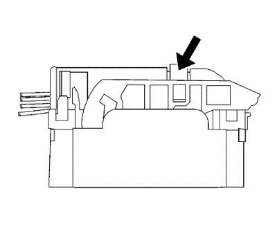
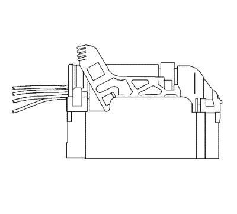
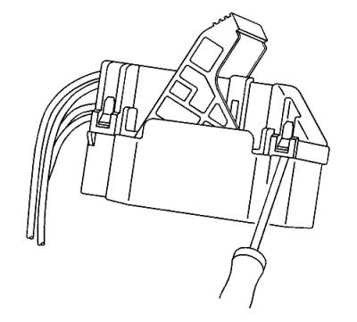
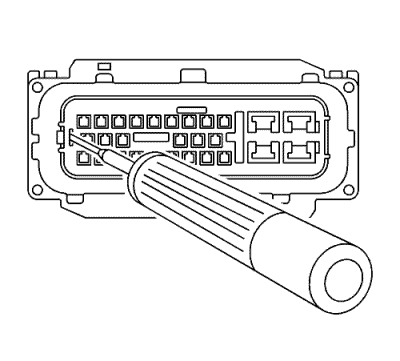
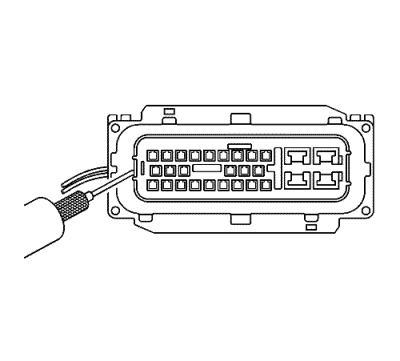
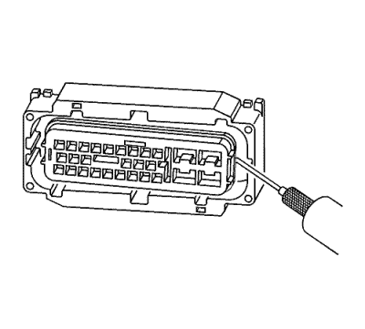
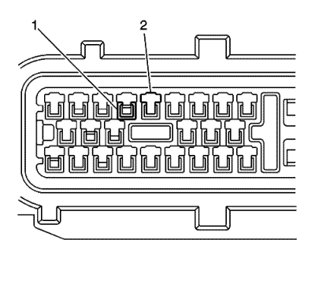
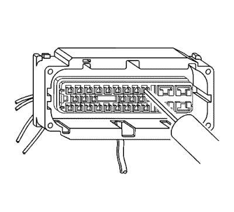
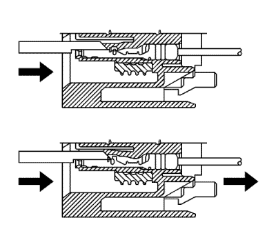

Conectores Sumitomo
Herramientas especiales
| • | EL-38125-580 Juego de herramientas de liberación de terminales |
| • | Herramienta de desbloqueo de terminales J-38125-12A |
| • | J-38125-552 Herramienta de desbloqueo de terminales |
| • | J-38125-553 Herramienta de desbloqueo de terminales |
Si desea informarse sobre herramientas regionales equivalentes, consultar Herramientas especiales .
Procedimiento de extracción de terminales

- Deslice el bloqueo de la palanca hacia delante mientras mantiene pulsada la lengüeta de desbloqueo del bloqueo de la palanca.

- Separe el conector del componente.

- Extraiga la tapa utilizando una herramienta de punta plana para liberar las lengüetas de bloqueo del conector y empujar hacia fuera la tapa.

- Libere la tensión de los retenes de la pieza frontal introduciendo la herramienta J-38125-12A en la ranura de retén simple en el extremo de la pieza frontal y saque con cuidado la lengüeta de bloqueo. Repita el proceso con las dos lengüetas de bloqueo de la pieza frontal en el lado opuesto de la pieza frontal.

- Una vez que se han relajado los retenes de la pieza frontal, utilice la herramienta J-38125-552 para tirar hacia arriba de la pieza frontal enganchando la herramienta debajo de la pieza frontal y tirando hacia arriba. La pieza frontal debe elevarse ligeramente.

- En el lado opuesto de la pieza frontal, utilice la herramienta J-38125-552 para tirar hacia arriba de la pieza frontal enganchando la herramienta debajo de la pieza frontal y tirando hacia arriba. La pieza frontal debe liberarse por completo. Si la pieza frontal no sale, repita el procedimiento en el lado opuesto.

- La imagen anterior muestra el canal de entrada en el que se introducirá la herramienta de liberación de terminal, y la cavidad de terminal.

- Introduzca la herramienta J-38125-553 en el canal de entrada y levante hacia arriba el retén de terminal. El retén del terminal es una pequeña pieza de plástico en la parte superior del terminal. El retén del terminal debe mantenerse arriba mientras se tira del terminal fuera del conector.

- La imagen muestra una vista seccionada del conector para ayudar al técnico en la liberación del retén del terminal.
- Repare el terminal siguiendo el procedimiento Reparaciones del terminal del conector.
- Vuelva a insertar el terminal reparado en la cavidad. Repita el procedimiento de diagnóstico para verificar la reparación y vuelva a conectar los cuerpos de los conectores.
Procedimiento de inserción de terminales
Una vez sustituido el terminal, realice el siguiente procedimiento para insertar el terminal.
- Deslice el nuevo terminal en la cavidad correcta en la parte posterior del conector.
- Empuje el terminal dentro del conector hasta que se bloquee en su sitio. El terminal nuevo debe estar a nivel con los demás terminales. Para asegurarse de que el terminal está bloqueado en su sitio, tire suavemente del cable.
- Para montar el conector, realice a la inversa el procedimiento de desmontaje del conector.
| © Copyright Chevrolet. Reservados todos los derechos |